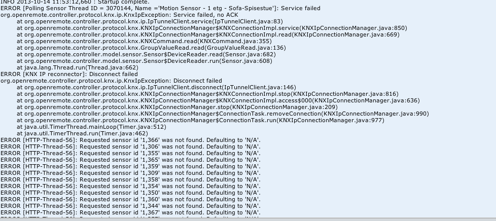

Hello,
Thank you for your great work putting together OpenRemote!
When I try to run the Controller on a Synology, it unfortunately crashes after a couple of hours with the exception below. I don't manage to figure out what the issue is. My IP/KNX gateway is a Siemens N148/22.
Thanks for your help!
Guillaume.
ERROR [KNX IP reconnector]: Disconnect failed
org.openremote.controller.protocol.knx.ip.KnxIpException: Disconnect failed
at org.openremote.controller.protocol.knx.ip.IpTunnelClient.disconnect(IpTunnelClient.java:146)
at org.openremote.controller.protocol.knx.KNXIpConnectionManager$KNXConnectionImpl.stop(KNXIpConnectionManager.java:816)
at org.openremote.controller.protocol.knx.KNXIpConnectionManager$KNXConnectionImpl.access$000(KNXIpConnectionManager.java:636)
at org.openremote.controller.protocol.knx.KNXIpConnectionManager.stop(KNXIpConnectionManager.java:209)
at org.openremote.controller.protocol.knx.KNXIpConnectionManager$ConnectionTask.removeConnection(KNXIpConnectionManager.java:990)
at org.openremote.controller.protocol.knx.KNXIpConnectionManager$ConnectionTask.run(KNXIpConnectionManager.java:977)
at java.util.TimerThread.mainLoop(Timer.java:512)
at java.util.TimerThread.run(Timer.java:462)
Exception in thread "KNX IP reconnector" java.lang.IllegalStateException: Shutdown in progress
at java.lang.ApplicationShutdownHooks.add(ApplicationShutdownHooks.java:39)
at java.lang.Runtime.addShutdownHook(Runtime.java:192)
at org.openremote.controller.protocol.knx.ip.IpTunnelClient.connect(IpTunnelClient.java:128)
at org.openremote.controller.protocol.knx.KNXIpConnectionManager$KNXConnectionImpl.connect(KNXIpConnectionManager.java:704)
at org.openremote.controller.protocol.knx.KNXIpConnectionManager.getConnection(KNXIpConnectionManager.java:224)
at org.openremote.controller.protocol.knx.KNXIpConnectionManager$ConnectionTask.run(KNXIpConnectionManager.java:980)
at java.util.TimerThread.mainLoop(Timer.java:512)
at java.util.TimerThread.run(Timer.java:462)
Apr 16, 2013 2:41:18 AM org.apache.catalina.core.StandardService stop
INFO: Stopping service Catalina
Apr 16, 2013 2:41:20 AM org.apache.coyote.http11.Http11Protocol destroy
INFO: Stopping Coyote HTTP/1.1 on http-18581
{kind=link}
|
Judging by the log snippet, the controller is in the shutdown sequence. That is, someone or something has sent the controller process a kill signal (assuming it wasn't you). Most likely this is then something the operating system is doing. These can be difficult to track down sometimes. Try to dig into the operating system logs to see what's happening (sorry can't point you to the right ones, others with more experience with Linux may be able to give more specifics). One example we've seen before is if the system is running low on memory, the operating system starts killing processes to ensure the kernel and core services can continue to run or can be closed down cleanly. Maybe that's the case here too? But if you shut down the controller process by yourself then the error you showed is not the main cause, just due to unclean shutdown sequence in the controller implementation itself. |
|
Hi guillaume, |
|
@Guillaume, @Yann |
|
Thank you for your feedback. I am using DSM 4.2-3161 on a DS209. I don't think the issue is related to a memory problem since the memory usage is around 35%. @Yann, I will try to deploy the war package as you suggested and update you. Thanks for your support. Guillaume. |
|
Yes I'm a KNX adept with RRD and emonCMS energy monitoring graph |
|
So the common denominator is KNX and Patters package for Synology? The CPU's are ARM and x86. |
|
Is this due to the same reasons or is there a different reason why this is happening?  |
|
I have Tomcat and java installed, but how do I use this to install the OR Controller on the NAS? The controller running with the PCLOADER is not running as it should and is giving me problems. |
|
OR consists of two WARs - webconsole and controller - which are deployed in tomcat. Get a stable version of these two and copy them to tomcat webapps directory. |
|
I downloaded the OpenRemote (OpenRemote-Controller-2.1.1.0_Snapshot-2013-06-17) Where do I find the controller war file? |
|
The error shown here is related to not receiving an acknowledgement frame to an KNX IP tunneling request (looks like a read request? Which would only be made at startup to retrieve the device state). It is a bit odd. Haven't seen that error before. There's something not right with the setup but the error logs don't reveal the reason. Can you get any functionality working on this system, or does everything fail with this same error? |
|
The war file is unpacked so it is the webapps/controller directory as a whole that you would need to copy to Tomcat's webapps directory, next to the webconsole.war. However, the OR distribution you downloaded already includes Tomcat, so a separate Tomcat install on your Synology is really not necessary. You just need the Java package and then the OR binary extracted on the system. I don't know the details of the Synology system but I would imagine doing the latter is a bit of a less effort than trying to build your own custom install of Tomcat for OR. |
|
That is what makes this the biggest issue. For instance, I have rule stating that when off signal is recevied, then dim down light with a delay stated at 45 min. |
|
I have installed java jdk-6u45, and extracted the OR folder (OpenRemote-Controller-2.1.1.0_Snapshot-2013-06-17). I am logged in via ssh, and logged inn as ROOT user. |
|
Try: > sh openremote.sh run Alternatively, do > cd bin After which you can do: > ./openremote.sh run |
|
sh openremote.sh run worked like a charm How do Sync this with the WEB Design UI when running this on my NAS? This still remains: Edit: |
sh openremote.sh run & Run the process in background. |
|
I have now installed the latest version of the controller on my Synology DS412+. Even with the new controller I get this error. |
|
I tried to run your command, but as soon as I closed the Terminal window on my Mac, the Controller stopped running. |
|
I keep getting this on a daily basis now. The sensors the always triggers the error are motion sensors. Do you have any idea of what could be the problem, or how to fix it? |
|
I have an idea I can try in the code, it's a bit of a long shot but may be worth a try. I won't be able to look at it in the next few days though. Please ping back to me next week if I haven't come back then. At least I can give an update on when I might be able to try something. |
|
Any new status on this issue? Some additional information. I have since last time added new sensors (currenctly expanding my KNX system). The error seems to only effect the latest added sensors. Also, stopping the controller and then restarting it, for then to sync multiple times before actually starting to use the system helps to reduce the |
|
Will get to it after working on a few documents first and getting a pile of paperwork done. Might even be this week if I get lucky. As I said, it's bit of a long shot so it may have no impact. Reviewing the code, when no ACK is received our client side does a bit of a drastic measure and attempts to close the connection (and then hopefully re-open it). I can try to change this behavior a bit to not completely kill and rebuild the connection but it may not make a difference, or even make things worse depending how the ACK matching is done, something else I need to check.... |
|
Not sure if this is supported in Mac, but linux would allow you to run OR as a service. |
|
Tracking similar issue here: Controller Ok on 2.0.2, not working on 2.1 or 2.2. Need to add more details on the ACK failures. |
|
This continues to be an issue for me, but today I noticed something that might be the reason why it crashes... |